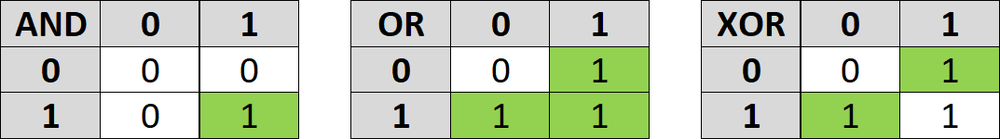
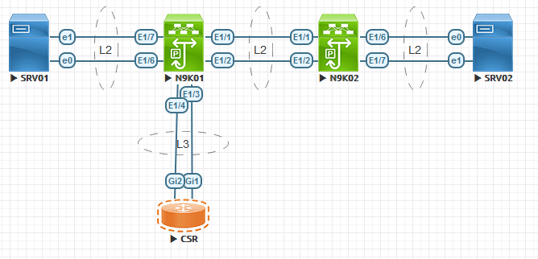
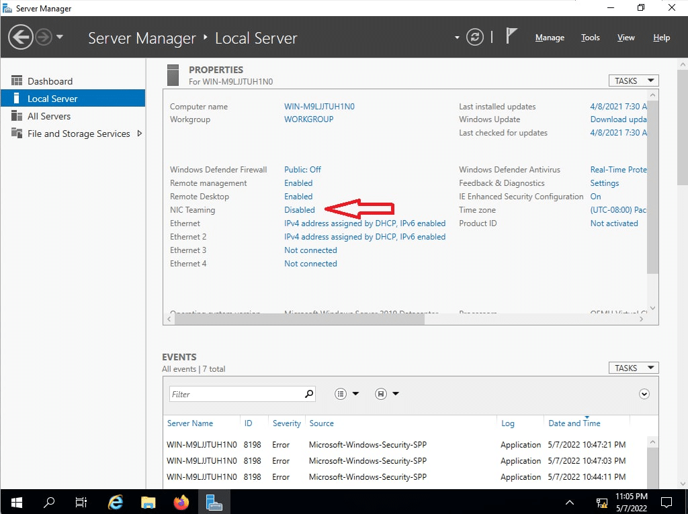
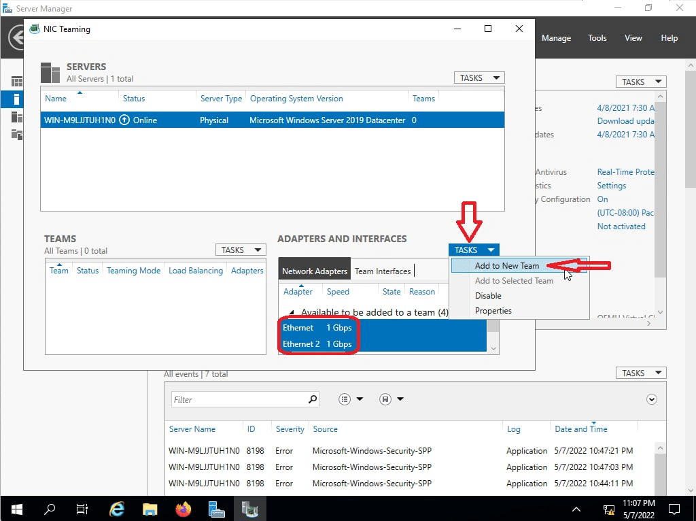
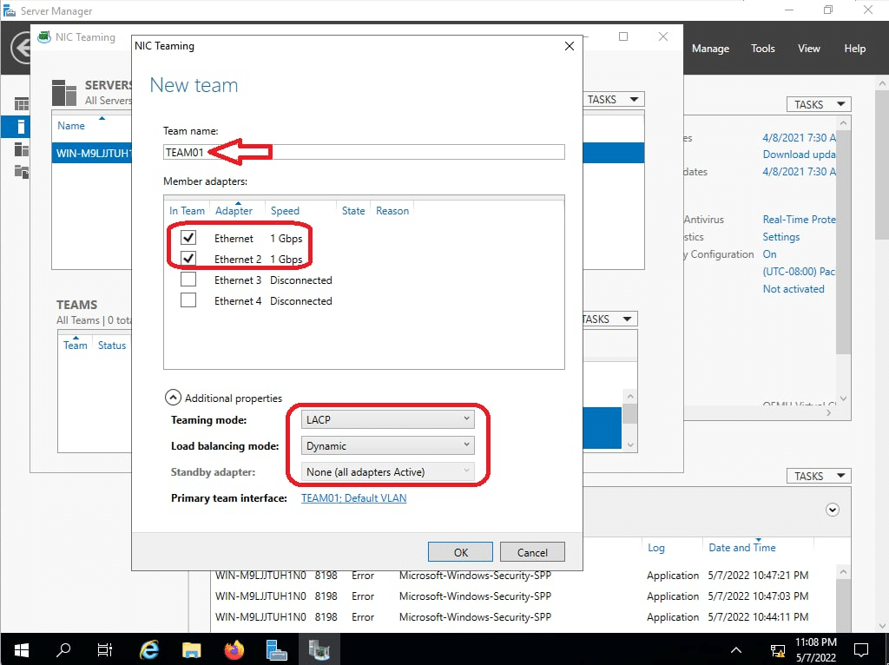
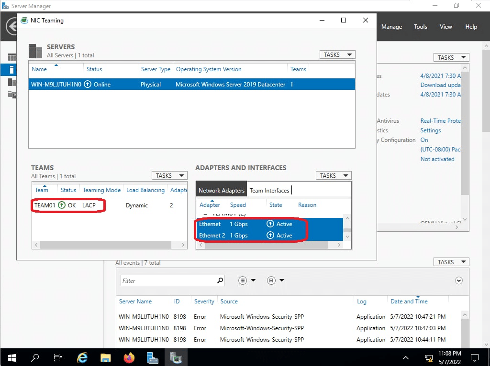

Port-Channel (Ether-Channel)
Link Aggregation
Port-channel is to NX-OS as EtherChannel is to Catalyst. Juniper calls it Aggregated Ethernet interface while Microsoft refers to NIC Teaming . In fact, all refer to the same concept of grouping couple of ports together in to a single logical interface.
Above all, The main advantage of grouping some ports into a single logical interface is that STP does not see the individual interfaces but rather it operates only on that logical link. As a result, we will be having all links in forwarding state. There is two Protocols supported on NX-OS:
- Static LAG: Not recommended.
- Link Aggregation Control Protocol (IEEE 802.3ad): Recommended.
- With its link monitoring LACP provides automatic addition and deletion of the member links without user intervention
Port-Channel: Static LAG
Static LAG is one method of making a link aggregation by forcing member ports to be part of the LAG without any negotiation. This is prune to STP loop if LAG fails.
N9K01# configure terminal N9K01(config)# feature lacp N9K01(config)# interface ethernet 1/1-2 N9K01(config-if-range)# channel-group 1 mode on
Port-Channel: Link Aggregation Control Protocol (LACP)
Unlike static LAG configuration, LACP advertises its protocol data units (PDUs) with destination MAC address of 0180:C200:0002. The interface participating in LACP can be configured as:
- Active: Interface will actively send LACP PDUs to the other side to form LAG
- Passive: Interface will passively listens LACP PDUs. However, once it received a LAG message, it becomes the partner peer, and in turn passively transmits the LACP PDUs.
In the table below, I am saying that at least one of the interfaces must be active to form a LAG.
| LACP Mode | Active | Passive |
|---|---|---|
| Active | LACP Forms | LACP Forms |
| Passive | LACP Forms | LACP does not form |
N9K01# configure terminal N9K01(config)# feature lacp N9K01(config)# interface ethernet 1/1-2 N9K01(config-if-range)# channel-group 1 force mode active N9K01(config)# interface ethernet 1/3-4 N9K01(config-if-range)# channel-group 1 force mode passive
LACP Fast-Failover
While the IEEE 802.3ad standard says LACP PDUs are send every 30 seconds but you can override the IEEE 802.3ad standard periodic timer, we can adjust the interval to the value we need.
In case you are in a stable switched network, you’d better not to use LACP fast rate timer as High Availability (HA) and Stateful Switchover (SSO) do not support it. Coupled with that, Cisco also does not recommend lacp fast rate on vPC peer-link.
N9K01# configure terminal N9K01(config)# feature lacp N9K01(config)# interface ethernet 1/1-2 N9K01(config-if-range)# channel-group 1 force mode active N9K01(config-if-range)# lacp rate fast
LACP Combability Parameters
In order for LAG to form the ports must pass the combability requirement. The full list of these requirements are available using show port-channel compatibility-parameters global command. As an example, you cannot LAG a layer 2 interface with a layer 3 interface in the same switch (different port modes). Nevertheless, you can force a port to become LAG member even without meeting all the combability requirements. However, certain requirement such as speed, duplex, and flow control must be met.
N9K01(config)# show port-channel compatibility-parameters * port mode Members must have the same port mode configured, either E,F or AUTO. * speed Members must have the same speed configured. If they are configured in AUTO * MTU Members have to have the same MTU configured. This only applies to ethernet * MEDIUM Members have to have the same medium type configured. * load interval Member must have same load interval configured. * port Voice VLAN Members must not have voice vlan configured. * VLAN translation mapping list Members must have the same VLAN translation list. * sub interfaces Members must not have sub-interfaces. * Duplex Mode Members must have same Duplex Mode configured. * Ethernet Layer Members must have same Ethernet Layer (switchport/no-switchport) configured. * Span Port Members cannot be SPAN ports. * Storm Control Members must have same storm-control configured. * Flow Control Members must have same flowctrl configured. * Port has PVLAN config Members must have same pvlan configuration
Distributing Traffic with LACP
Next, I am discussing about the load sharing with LACP. Additionally, NX-OS uses different hashing algorithms to determine how to distribute traffic over LAG members. Distributing method is locally-significant egress implying that the other peer can use a different hashing algorithm.
N9K01# configure terminal N9K01(config)# feature lacp ! Note that you cannot have different load-balancing methods for different ! Port-channel on one Nexus Switch. N9K01(config)# port-channel load-balance ? dst Destination based parameters internal Configure port-channel load balance internal commands resilient Configure port-channel load balance resilient mode src Source based parameters src-dst Source-destination based parameters N9K01(config)# port-channel load-balance src-dst ? gtpu IP and GTP-TEID inner-header Inner header ip IP ip-gre IP, GRE key ip-l4port IP and L4 port ip-l4port-vlan IP, L4 port and VLAN ip-vlan IP and VLAN ipv6-flow-label IPv6 Flow Label l4port L4 port mac MAC mac-ip-l4port-vlan MAC, IP, L4 port and VLAN
Let us see how src-dst ip hashing algorithm works. First, we need to discuss what XOR operation is:

Altogether, a LAG with 2 interfaces, the switch performs an XOR operation on the last bit of the IPs. Similarly, a switch with 4 interfaces in the LAG XORs the last 2 bits of source and destination IP addresses.
| IP Address | XOR Result | Distribute Frame Over Link number |
|---|---|---|
| 10.90.1.81 (xxxxxx01) 10.90.1.80 (xxxxxx00) | xxxxxx01 | 1 |
| 10.90.1.83 (xxxxxx11) 10.90.1.80 (xxxxxx00) | xxxxxx11 | 3 |
| 10.90.1.84 (xxxxxx00) 10.90.1.80 (xxxxxx00) | xxxxxx00 | 0 |
L3 Port-Channel
You can also bundle L3 interfaces to together. It does not require the other side also to be L3 as LACP is independent of the port mode. (Do not confuse this with LACP combability parameters wherein the parameters must match locally on the switch for different interfaces).
N9K01# configure terminal N9K01(config)# feature lacp N9K01(config)# interface ethernet 1/1-2 N9K01(config-if-range)# no switchport N9K01(config-if-range)# channel-group 1 mode active
MultiChassis LAG (MCLAG)
Our overall point is to add more redundancy to the network. However, having a single switch is a single point of failure. To remove the single failure on the access side of the network, we connect the server to two different switches (chassis). The following is different technologies used to provide redundancy at the chassis level:
- Cisco StackWise
- Virtual Switching System
- Virtual Port Channel (vPC)
The goal with MCLAG is make the server think that it is multihomed to a single switch. For that to work, switches must synchronize their control plane amongst them while forwarding the traffic in and out the member ports on both chassis.
Port-Channel workshop

Configuration
N9K01
feature lacp interface ethernet 1/1-2 channel-group 1 mode active interface port-channel 1 switchport mode trunk spanning-tree port type network interface ethernet 1/6-7 channel-group 2 mode active interface port-channel 2 switchport mode access spanning-tree port type edge interface ethernet 1/3-4 no switchport no shutdown channel-group 3 mode active interface port-channel 3 ip address 192.168.1.0/31
N9K02
feature lacp interface ethernet 1/1-2 channel-group 1 mode passive interface port-channel 1 switchport mode trunk spanning-tree port type network interface ethernet 1/6-7 channel-group 2 mode active interface port-channel 2 switchport mode access spanning-tree port type edge
CSR01
interface port-channel 3 interface range gigabitEthernet 1-2 channel-group 1 mode passive interface port-channel 3 ip address 192.168.1.1 255.255.255.254
Windows




Verification
N9K01(config)# show port-channel summary
Flags: D - Down P - Up in port-channel (members)
I - Individual H - Hot-standby (LACP only)
s - Suspended r - Module-removed
b - BFD Session Wait
S - Switched R - Routed
U - Up (port-channel)
p - Up in delay-lacp mode (member)
M - Not in use. Min-links not met
--------------------------------------------------------------------------------
Group Port- Type Protocol Member Ports
Channel
--------------------------------------------------------------------------------
1 Po1(SU) Eth LACP Eth1/1(P) Eth1/2(P)
2 Po2(SU) Eth LACP Eth1/6(P) Eth1/7(P)
3 Po3(RU) Eth LACP Eth1/3(P) Eth1/4(P)
N9K01(config)# show lacp counters
NOTE: Clear lacp counters to get accurate statistics
------------------------------------------------------------------------------
LACPDUs Markers/Resp LACPDUs
Port Sent Recv Recv Sent Pkts Err
------------------------------------------------------------------------------
port-channel1
Ethernet1/1 318 287 0 0 0
Ethernet1/2 318 288 0 0 0
port-channel2
Ethernet1/6 7876 267 0 0 0
Ethernet1/7 7877 269 0 0 0
port-channel3
Ethernet1/3 92 39 0 0 0
Ethernet1/4 90 38 0 0 0